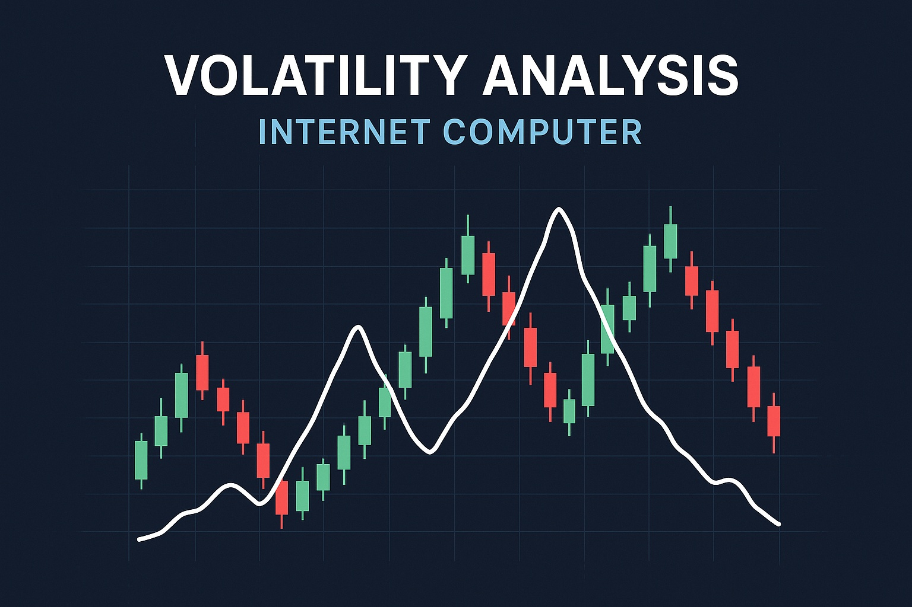

Internet Computer Price Prediction for End of 2025: In-Depth Analysis and Insights
The information in this article is provided for educational purposes only and is not investment advice. Cryptocurrency investments carry risks.
Introduction
As of August 20, 2025, 01:13 AM EEST, Internet Computer (ICP) is trading at approximately $5.79, positioning itself as a pioneering layer-1 blockchain developed by the DFINITY Foundation. Designed to decentralize the internet, ICP enables smart contracts and decentralized applications (dApps) to run at web speed, leveraging chain key cryptography and a network of node machines. Its vision to create a "World Computer" supports Web3 services, including SocialFi, GameFi, and DeFi, without reliance on traditional cloud infrastructure. This article provides a comprehensive analysis of ICP’s price outlook for the end of 2025, exploring bullish and bearish scenarios, key growth drivers, and potential risks based on current market trends and ecosystem developments.

Current Situation
As of August 20, 2025, Internet Computer’s price is around $5.79, reflecting a 0.99% increase over the past week but a 5.74% decline over the past 24 hours, with a market cap of approximately $2.76 billion. Over the past 30 days, ICP has shown moderate volatility of 4.77%, with 57% of days closing in the green. The Fear and Greed Index at 73 indicates greed-driven investor sentiment, bolstered by ICP’s technological advancements, including AI integration and Chain Fusion for blockchain interoperability. Since its all-time high of $750.73 in May 2021, ICP has declined significantly, but recent bullish patterns, such as a breakout from a trading channel in December 2023, suggest potential for recovery.
Price Predictions for End of 2025
Analyst forecasts for Internet Computer by December 2025 vary based on market conditions and technical analyses. Bearish scenarios suggest a potential decline to $4.15–$4.54 if a projected 30–50% market correction occurs in early 2025, as noted by some analysts predicting a new all-time low. Moderate projections estimate ICP stabilizing between $6.49 and $12.90, supported by ecosystem growth and Web3 adoption. Bullish forecasts predict ICP could reach $18.43–$35.64, with some analysts projecting up to $96.36 in an optimistic scenario driven by institutional adoption and technological breakthroughs. CoinCodex forecasts ICP at $6.49 by year-end, while CoinPedia suggests a high of $18.5.
Factors Driving Price Growth
- Ecosystem Expansion: ICP’s ecosystem, with over $27 million in DeFi TVL and 40+ upgrades planned for 2025, including AI integration and Chain Fusion, drives adoption.
- Institutional Adoption: Partnerships with firms like Elliptic and increased developer activity enhance ICP’s credibility and use cases.
- Technological Innovation: Chain key cryptography and subnet blockchains enable limitless scalability and secure Web3 services, positioning ICP as a leader in decentralized computing.
- Market Rally: A projected cryptocurrency market surge in 2025, particularly from February to April, could create a favorable environment for ICP’s price growth.
- Web3 Leadership: ICP’s ability to host dApps directly on-chain, supporting SocialFi, GameFi, and metaverse applications, strengthens its utility.
Risks and Downward Factors
- Market Volatility: A projected 30–50% market correction in early 2025 could exert downward pressure on ICP’s price, potentially pushing it toward $4.50.
- Regulatory Risks: Stricter global regulations on cryptocurrencies could limit ICP’s accessibility and adoption, impacting investor sentiment.
- Competition: Competing layer-1 blockchains like Ethereum, Solana, and Aptos could challenge ICP’s market share if they gain traction in Web3 and DeFi.
- Historical Volatility: ICP’s dramatic fall from $750.73 in 2021 to below $15 in 2022 raises concerns about investor trust and price stability.
Volatility Analysis
From July to August 2025, ICP’s price increased from $5.30 to $5.79, marking a 9.25% gain with a volatility of 4.77%, indicating relative stability compared to its historical trends. Technical indicators, including a bullish breakout above the 50-day moving average and a Relative Strength Index (RSI) of 64 in the neutral zone, suggest potential for further upside. A projected market recovery from February to April 2025 could drive additional growth, particularly as ICP advances its roadmap with AI integration and interoperability features. With a circulating supply of 535.82 million and a robust developer community, ICP is well-positioned for sustained adoption and value appreciation.
Conclusion
By the end of 2025, Internet Computer’s price is projected to range between $6.49 and $18.43, with the potential to reach $35.64 in a bullish market driven by ecosystem expansion, institutional adoption, and technological advancements. However, investors should remain cautious of market volatility, regulatory uncertainties, competition, and ICP’s historical price swings. Thorough research and risk management are essential before investing in Internet Computer.